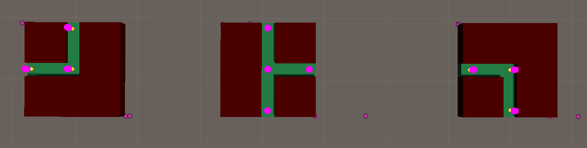
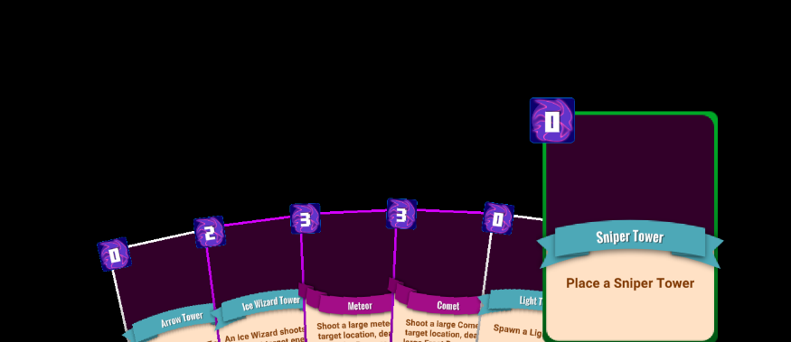
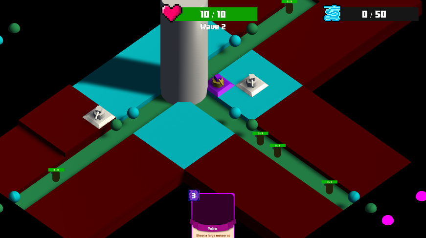

Project: TOWERDECK
| Timeframe | January 2024 - Present Day |
| Languages Used |
C#
|
| Softwares Used | Unity, Blender, Studio One |
| Project Role | Solo Project (everything) |
As a fan of both tower defense games and strategy card games, I decided to take it upon myself to combine the two massive genres. The idea was to make a game in a fantasy RPG setting where it felt like you were playing a card game such as Slay the Spire, but the avenue of which you play on was on a procedurally generated map and you are playing against the AI enemies. The game is not yet finished, however I made this section to explain the game thoroughly through a few massive systems.
My Contributions
Map Generation

Project: TOWERDECK has a procedurally generated map that is created before the game begins. Each chunk of the map is called a "Map Block," and with these map blocks I am able to build a map that enemies can walk across and move toward the player's castle.
There is a map block for every combination of directions within a square. That includes north, south, east, and west. As an example, there is a map block for just north, and there is one for the combination of north, south, and east. An example below:
There are several steps to ensure the game will run smoothly. 
Step 1: Initial generation of the map.
A castle mapblock is placed. When any mapblock is placed, all open directions that it provides is placed in a list. It is this list that I pull a new location from to place a new mapblock. A loop runs through this a number of times equal to the amount that I set (lets say 100 mapblocks for example).
This step is crucial as it places the foundation of the map. When placing any block, I must check to ensure that the direction it came from is connected to the new block. If I place a block at (0, 1) and it came from (0, 0), then the new block must connect with its southern neighbour.
Step 2: Smoothing the edges.
After the initial generation, I go through every block to make sure that it doesn't have open directions. We don't want to have a mapblock open to the endless void where nothing is, it should be closed off. Should I find something that is "broken," I simply replace a block with a suitable block. If I replace a block that has an open path going east, I just replace it with a block that cannot go east.
Step 3: Waypoint Generation/Connecting
Waypoints are my term for transform locations that enemies (or projectiles) use to walk toward. Part of placing a block is to connect all neighbours via their Waypoints. I do this in a separate step to ensure a smooth transition from generating the map and replacing any blocks that I come across.
Enemy AI should have its own section but I figured I would put this here as it is part of my overall map generation. In the picture above, the Waypoints are the pink dots.
Video shows a visual of the generation. Notice how some blocks become replaced after the initial generation
Card Mechanics
Project: TOWERDECK utilizes cards as its main way of involving strategic gameplay for the players. Cards are what places new towers, casts spells onto the map that could damage enemies or upgrade towers, or cast spells that could give you more opportunities of finding new cards by drawing more, finding a specific one, etc.
As someone who has played many card games, I knew that there was a certain feel that I wanted for my card game. The best part of any major card game is the amount of ways you can play it. No two games are the same. The way I accomplish this is by having the player choose a class!
Players may choose to be a wizard, bard, cleric, or ranger (for now). Each class comes with their own unique cards and card mechanics that players may choose from over the course of their time playing. They are even allowed, after a certain amount of waves, to multiclass and mix the type of cards they have to choose from! So, if you wanted to be a ranger-wizard, you could.
The green card below is a Ranger card. Only rangers can place a Sniper Tower! 
Various Pictures
